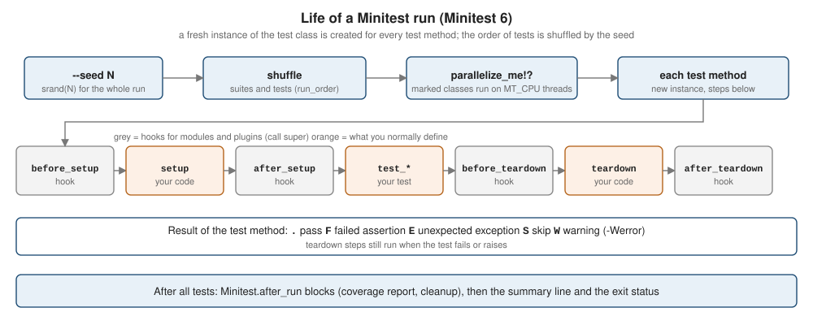

Testing with Minitest
|
This content was generated with the assistance of AI and should be verified against the official documentation before being relied on in production. |
This page is written against Ruby 4.0 (4.0.7, checked on 2026-10-18) and Minitest 6, the version that Ruby 4.0 bundles; features newer than Ruby 3.0 name the version that introduced them.
Minitest is the test framework that ships with Ruby. It is small, it is fast, and a test is just a class with methods, so everything
you know about classes, modules, blocks and Enumerable applies to tests as well. This page is the most detailed treatment of testing in the section: how to write
tests with the Minitest::Test assertions or with Minitest::Spec expectations, how the test life cycle works, what happened to mocks and stubs in Minitest 6, how to run, filter and
reproduce a run, how to run tests in parallel, how to organise files and fixtures, how to drive a feature with tests (TDD), how to measure coverage, and which parts of older Minitest
tutorials no longer work.
RSpec, the main alternative, has its own page, RSpec and Test Doubles, which also compares the two. Linters that
keep tests tidy are in Style, Linting and Static Analysis; the gem layout and the Rakefile that
runs the tests are explained in Creating and Publishing Gems, and Rake; why a bundled gem must be listed in the Gemfile
is explained in RubyGems and Bundler; the exception classes that assert_raises checks are in
Exceptions and Error Handling; measuring speed rather than correctness is in
Performance, Benchmarking and Profiling. The same topic for Go is in
Go testing.
Every example on this page was syntax-checked with ruby -wc, run with ruby -w on Ruby 4.0.7 and linted with RuboCop 1.92 using the configuration of the running shelf gem
(target Ruby 4.0, double-quoted strings). The output shown in the output blocks is the real output of those runs. Run times and the random seed change from run to run, so
the Finished in lines and --seed numbers in your terminal will differ. Everything uses Minitest 6.0.0, the version bundled with Ruby 4.0.7, except where the text says otherwise.
Two things were not run because the gems are not installed on the machine used to prepare these pages, and the page labels them each time: the minitest-mock gem and SimpleCov.
Minitest in the Ruby ecosystem
Ruby ships two xUnit-style frameworks as bundled gems, minitest and test-unit, and the Ruby 4.0.0 NEWS lists both as updated bundled gems: minitest 6.0.0 and test-unit 3.7.5.
A bundled gem is installed with Ruby but is not part of the default require path under Bundler: it must be declared in the Gemfile (or the gemspec). Without that declaration bundle exec fails to
find it, exactly like any gem that is not in the bundle:
bundled_gems.rb:60:in 'Kernel.require': cannot load such file -- minitest/autorun (LoadError)That is the first line of the real error (path prefix shortened; the following lines are the backtrace) from a scratch project whose Gemfile had only a source line. The fix is one line, gem "minitest", "~> 6.0", which the shelf Gemfile already contains. The
Minitest 6.0.0 gem requires Ruby 3.2 or newer and, in the lockfile of the scratch project, depends on prism. For comparison, the Ruby releases installed on the machine used to
write these pages bundle Minitest 5.25.4 (Ruby 3.4.11), 5.20.0 (Ruby 3.3.12) and 5.25.1 (Ruby 3.2.11), so code written for Ruby 3.x runs on Minitest 5 unless the project pins the gem.
| Framework | What it is | When it fits |
|---|---|---|
Minitest |
Bundled gem. Two styles in one library: |
The default for libraries and for teams that want the fewest dependencies. Tests are ordinary Ruby, so there is little to learn beyond the assertions. |
test-unit |
Bundled gem, the successor of the original Ruby 1.8 library. |
Projects that already use it. See test-unit. |
RSpec |
Community gems ( |
Teams that prefer the DSL, richer matchers and built-in doubles. See RSpec and Test Doubles. |
Rails projects use Minitest by default, but Rails is outside the scope of this section; everything here is plain Ruby.
Test layout and the first test
Minitest looks for no special directory, but the convention that the Rake task, bundle gem and every tutorial follow is to mirror the lib tree under test, name each file after the thing it
tests with an _test.rb suffix, and keep shared setup in test/test_helper.rb:
shelf/
Gemfile
Rakefile
shelf.gemspec
lib/shelf.rb lib/shelf/isbn.rb lib/shelf/book.rb lib/shelf/catalog.rb ...
test/
test_helper.rb
shelf_test.rb
shelf/
isbn_test.rb catalog_test.rb loan_test.rb ...The helper puts lib on the load path, loads the gem and loads the runner. minitest/autorun installs an at_exit hook that runs every test class defined by the time the file ends, so a test
file needs no main code:
# frozen_string_literal: true
$LOAD_PATH.unshift File.expand_path("../lib", __dir__)
require "shelf"
require "minitest/autorun"Source: Minitest documentation: Synopsis
A test is a class that inherits from Minitest::Test; every public instance method whose name starts with test_ is a test. Each test method runs on a fresh instance of the class, so an instance variable
set in one test is invisible to the next. A test passes when it finishes without an exception. Assertions are methods of Minitest::Assertions, included in Minitest::Test.
# frozen_string_literal: true
require "test_helper"
class IsbnTest < Minitest::Test
def test_hyphens_are_removed
assert_equal "9780306406157", Shelf::Isbn.new("978-0-306-40615-7").to_s
end
def test_bad_check_digit_is_rejected
error = assert_raises(ArgumentError) { Shelf::Isbn.new("978-0-306-40615-8") }
assert_equal "invalid ISBN: 978-0-306-40615-8", error.message
end
def test_value_equality
assert_equal Shelf::Isbn.new("9780306406157"), Shelf::Isbn.new("978-0-306-40615-7")
end
def test_no_blank_digits
refute_empty Shelf::Isbn.new("9780306406157").digits
end
def test_data_is_frozen
assert_predicate Shelf::Isbn.new("9780306406157"), :frozen?
end
def test_price_is_not_ready
skip "prices are not modelled yet"
end
endSource: Minitest::Test and Minitest::Assertions
Run the file directly with Ruby. -I adds directories to the load path (test for test_helper, lib for the gem), -w turns on warnings, and --seed repeats a particular random order:
ruby -w -Itest -Ilib test/shelf/isbn_test.rb --seed 42Run options: --seed 42
# Running:
....S.
Finished in 0.000335s, 17910.4483 runs/s, 23880.5977 assertions/s.
6 runs, 8 assertions, 0 failures, 0 errors, 1 skips
You have skipped tests. Run with --verbose for details.Source: Minitest documentation: Synopsis
Reading the summary line: runs is the number of test methods, assertions the number of assertion calls that were counted, then failures, errors and skips. The dots are one character per test: . passed,
F an assertion failed, E an unexpected exception, S a skip. The count of assertions is a little higher than the number of assert_* lines you wrote because some assertions call others:
assert_predicate first calls assert_respond_to, which is why test_data_is_frozen contributes two. A test with zero assertions passes, and Minitest tells you nothing about it except the 0 assertions in the
totals, so a test that asserts nothing is a bug in the test.
Three details of the example are worth copying. assert_raises returns the exception, so the message can be asserted separately. assert_equal compares with ==, so the two Data instances
compare equal by value. And skip marks a test as intentionally not run, with a reason; the S is reported in the summary and --show-skips (or -v) lists the reasons.
Assertions
Assertions are methods that raise Minitest::Assertion when the check fails. The runner catches it, records a failure and goes on to the next test; a failed assertion therefore ends only its own test method.
Every assertion takes an optional last argument, a message that is either a string or a lambda (built only when the assertion fails).
Choosing the assertion
The tables below list the assertions of Minitest::Assertions in Minitest 6.0. Each assert_x has a refute_x twin that passes when the check fails, except where noted.
| Assertion | Passes when |
|---|---|
|
|
|
|
|
|
|
|
|
|
|
|
|
|
|
|
|
|
|
|
|
The block raises one of the classes (or a subclass) and the exception is returned. With no class it expects |
|
The block calls |
|
The block writes exactly that text (a |
|
The block, which should contain a |
|
|
|
Not checks: fail unconditionally, count an assertion, mark the test skipped, and skip only until a date (afterwards the test runs again and a |
Helpers that are not assertions: capture_io { } returns [stdout, stderr] of the block, capture_subprocess_io { } does the same for child processes (it redirects file descriptors), mu_pp(obj) is the inspect
used in messages, diff(exp, act) produces the diff, and message(msg) { default } builds a failure message. The old assert_send was removed in Minitest 6; use assert_predicate or assert_operator.
Source: Minitest::Assertions
Failure messages
A failure message is part of the test’s value, so it pays to know what Minitest prints. This file deliberately fails seven assertions (it is a demonstration, not part of the shelf suite):
# frozen_string_literal: true
require "test_helper"
class FailuresTest < Minitest::Test
def test_equal_strings
assert_equal "ruby basics", "ruby basics"
end
def test_equal_arrays
assert_equal %w[a b c], %w[a x c]
end
def test_delta
assert_in_delta 0.3, 0.1 + 0.2 + 0.01, 0.001
end
def test_lazy_message
assert_includes [1, 2], 3, -> { "expected a known id" }
end
def test_raises_nothing
assert_raises(KeyError) { {}.fetch(:a, 1) }
end
def test_wrong_error
assert_raises(KeyError) { Integer("x") }
end
def test_nil
assert_nil 0
end
endRun options: --seed 1
# Running:
FFFFFFF
Finished in 0.015162s, 461.6805 runs/s, 527.6349 assertions/s.
1) Failure:
FailuresTest#test_wrong_error [test/shelf/failures_test.rb:27]:
[KeyError] exception expected, not
Class: <ArgumentError>
Message: <"invalid value for Integer(): \"x\"">
---Backtrace---
test/shelf/failures_test.rb:27:in 'Kernel#Integer'
test/shelf/failures_test.rb:27:in 'block in FailuresTest#test_wrong_error'
---------------
2) Failure:
FailuresTest#test_equal_strings [test/shelf/failures_test.rb:7]:
--- expected
+++ actual
@@ -1,3 +1,3 @@
# encoding: UTF-8
# valid: true
-"ruby basics"
+"ruby basics"
3) Failure:
FailuresTest#test_equal_arrays [test/shelf/failures_test.rb:11]:
Expected: ["a", "b", "c"]
Actual: ["a", "x", "c"]
4) Failure:
FailuresTest#test_delta [test/shelf/failures_test.rb:15]:
Expected |0.3 - 0.31000000000000005| (0.010000000000000064) to be <= 0.001.
5) Failure:
FailuresTest#test_nil [test/shelf/failures_test.rb:31]:
Expected 0 to be nil.
6) Failure:
FailuresTest#test_lazy_message [test/shelf/failures_test.rb:19]:
expected a known id
7) Failure:
FailuresTest#test_raises_nothing [test/shelf/failures_test.rb:23]:
KeyError expected but nothing was raised.
7 runs, 8 assertions, 7 failures, 0 errors, 0 skipsSource: Minitest::Assertions
Notice how the messages change with the data: strings that differ only in whitespace get a diff (the # encoding and valid lines tell you the encoding of the text), arrays print Expected and Actual, floats show the
computed difference, assert_raises reports a wrong exception class with its message and backtrace, and a lambda as the message is only evaluated when the assertion fails.
When a different exception escapes assert_raises, it is reported as a failure (F), whereas an exception raised outside any assert_raises is an error (E).
Floating-point numbers are the usual reason to reach for assert_in_delta: 0.1 + 0.2 is 0.30000000000000004, so assert_equal 0.3, 0.1 + 0.2 fails. Money belongs in Integer cents or BigDecimal, not Float.
Custom assertions
A repeated check deserves its own assertion. Put it in a module, build the message with message { } so that it is lazy, and include the module in the tests that need it. Minitest trims the backtrace
so the reported line is the caller’s, not the helper’s:
# frozen_string_literal: true
# Custom assertions live in a module that tests include.
module BookAssertions
def assert_titled(expected, book, msg = nil)
msg = message(msg) { "Expected book titled #{expected.inspect}, got #{book.title.inspect}" }
assert_equal expected, book.title, msg
end
end# frozen_string_literal: true
require "test_helper"
require "support_assertions"
class CustomAssertionTest < Minitest::Test
include BookAssertions
def test_titled
book = Shelf::Book.new(Shelf::Isbn.new("9780306406157"), "ruby basics", Shelf::Author.new("A. Writer"))
assert_titled "ruby basics", book
end
endWhen the second call is changed to assert_titled "other", book, the report points at the test, not at the module:
Run options: --seed 3
# Running:
F
Finished in 0.000270s, 3703.7026 runs/s, 7407.4053 assertions/s.
1) Failure:
CustomAssertionTest#test_titled [test/shelf/custom_assertion_test.rb:12]:
Expected book titled "other", got "ruby basics".
1 runs, 2 assertions, 1 failures, 0 errors, 0 skipsSource: Minitest::Assertions#message
Pattern matching in tests
assert_pattern (and refute_pattern) turn Ruby’s => pattern matching into an assertion, which is a compact way to check the shape of a nested Data or Hash. Variables bound inside the pattern are local
to the block, so they are not visible after it: put the checks inside the block or use ordinary assertions for values. See Pattern Matching for the syntax.
The shelf Loan class (whose describe method is itself a case/in) gives a complete suite that generates one test per state with define_method:
# frozen_string_literal: true
require "test_helper"
class LoanTest < Minitest::Test
def setup
@book = Shelf::Book.new(Shelf::Isbn.new("9780306406157"), "ruby basics", Shelf::Author.new("A. Writer"))
end
{
available: "ruby basics is on the shelf",
lent: "ruby basics is lent",
overdue: "ruby basics is overdue",
returned: "ruby basics came back"
}.each do |state, text|
define_method(:"test_describe_#{state}") do
assert_equal text, Shelf::Loan.new(@book, state:).describe
end
end
def test_unknown_state
error = assert_raises(ArgumentError) { Shelf::Loan.new(@book, state: :lost) }
assert_match(/unknown state: lost/, error.message)
end
def test_book_matches_a_pattern
assert_pattern { @book => { title: /basics/, author: { name: String } } }
refute_pattern { @book => { title: Integer } }
end
endTesting output, commands and the environment
assert_output and capture_io swap $stdout and $stderr for the duration of a block, which works for Ruby code in the same process. For a script such as exe/shelf, use
capture_subprocess_io, which captures what a child process writes to the real file descriptors, and run the script with the same Ruby that runs the tests (RbConfig.ruby):
# frozen_string_literal: true
require "test_helper"
require "rbconfig"
class CliTest < Minitest::Test
EXE = File.expand_path("../../exe/shelf", __dir__)
LIB = File.expand_path("../../lib", __dir__)
def run_shelf(*)
capture_subprocess_io { system(RbConfig.ruby, "-I", LIB, EXE, *) }
end
def test_version
out, err = run_shelf("--version")
assert_equal "0.1.0\n", out
assert_empty err
end
def test_search_filters_titles
out, = run_shelf("--search=nothing")
assert_empty out
end
def test_in_process_output
assert_output("ruby basics\n", "") { puts "ruby basics" }
end
def test_throw
assert_equal :found, assert_throws(:found) { throw :found, :found }
end
endThe test life cycle: setup, teardown and hooks
For every test method Minitest creates a new instance of the class and runs a fixed sequence of methods on it. setup and teardown are the two you normally define; the four
before_setup, after_setup, before_teardown and after_teardown hooks exist so that modules and plugins can add behaviour without the test author remembering to call super.
The teardown steps run even when the test fails or raises.

# frozen_string_literal: true
require "test_helper"
class LifecycleTest < Minitest::Test
# A module can hook into the same steps; it must call super.
module Tracing
def before_setup
(@log ||= []) << :before_setup
super
end
def after_teardown
super
puts @log.inspect
end
end
include Tracing
def setup
(@log ||= []) << :setup
end
def teardown
@log << :teardown
end
def test_first
@log << :test_first
end
def test_second
@log << :test_second
end
endRun options: --seed 3
# Running:
[:before_setup, :setup, :test_second, :teardown]
.[:before_setup, :setup, :test_first, :teardown]
.
Finished in 0.000279s, 7168.4580 runs/s, 0.0000 assertions/s.
2 runs, 0 assertions, 0 failures, 0 errors, 0 skipsThe log shows the order for each of the two tests and that the order of the tests themselves (test_second first) is random. A module that overrides a hook must call super, otherwise the
class’s own setup or the other modules' hooks are skipped: before_setup and before_teardown call super first in the usual pattern for setup and last for teardown, as in Tracing above.
Avoid doing real work in setup: expensive shared state makes tests slow and couples them. Build what a test needs inside the test, or in a small helper method with a descriptive name.
Class-level run code is available through Minitest.after_run, which registers a block that runs once after all tests; coverage reporting (see Coverage) uses it. There is no built-in before_all hook
by design, because shared state between tests breaks the independence the random order relies on. The README’s FAQ suggests a constant initialised with begin ... end inside the describe block for the rare expensive setup,
and the community minitest-hooks gem provides before_all and around hooks.
Minitest::Spec
Minitest::Spec is a thin layer over the same classes. describe defines a subclass of Minitest::Spec (itself a subclass of Minitest::Test), it defines a test method, before/after define
setup/teardown, let defines a memoised helper, and subject is a let named subject. Because a describe block is a class body, describe blocks nest, and the name of the inner class is built from the outer ones.
Every assertion of Minitest::Test is also available, and every test can use either style.
# frozen_string_literal: true
require "test_helper"
describe Shelf::Catalog do
let(:isbn) { Shelf::Isbn.new("978-0-306-40615-7") }
let(:book) { Shelf::Book.new(isbn, "ruby basics", Shelf::Author.new("A. Writer")) }
let(:catalog) { Shelf::Catalog.new(store: Shelf::Store::Memory.new) }
subject { catalog.add(book) }
describe "#each" do
it "yields every added book" do
_(subject.to_a).must_equal [book]
end
it "returns an enumerator without a block" do
_(subject.each).must_be_kind_of Enumerator
end
end
describe "when empty" do
it "has no books" do
_(catalog.to_a).must_be_empty
end
it "raises on first" do
_(catalog.first).must_be_nil
end
it "is pending"
end
it "maps titles" do
expect(subject.map(&:title)).must_equal ["ruby basics"]
end
endRun options: -v --seed 3
# Running:
Shelf::Catalog::#each#test_0002_returns an enumerator without a block = 0.00 s = .
Shelf::Catalog::#each#test_0001_yields every added book = 0.00 s = .
Shelf::Catalog::when empty#test_0002_raises on first = 0.00 s = .
Shelf::Catalog::when empty#test_0001_has no books = 0.00 s = .
Shelf::Catalog::when empty#test_0003_is pending = 0.00 s = S
Shelf::Catalog#test_0001_maps titles = 0.00 s = .
Finished in 0.000407s, 14742.0163 runs/s, 14742.0163 assertions/s.
1) Skipped:
Shelf::Catalog::when empty#test_0003_is pending [[...]/minitest-6.0.0/lib/minitest/assertions.rb:796]:
(no tests defined)
6 runs, 6 assertions, 0 failures, 0 errors, 1 skipsSource: Minitest::Spec
The [...] in the skip location above stands for the path of the installed gem, which is where Minitest raises the skip: an it without a block is reported as skipped ((no tests defined)) so a
specification can be sketched before it is implemented. The generated method names (test_0001_yields every added book) number the tests per describe, so a test is selected with -i by its text.
Expectations: _(), value and expect
The must_* and wont_* expectations are methods of Minitest::Expectation, an object that wraps a value. Wrap the value with _(), value() or expect(); all three are the same. Minitest 6 removed the
old form that called must_equal directly on any object ((1 + 1).must_equal 2), because it monkey-patched Object. Code that still does so raises NoMethodError:
Run options: --seed 35966
# Running:
E
Finished in 0.000255s, 3921.5674 runs/s, 0.0000 assertions/s.
1) Error:
Minitest 5 habits#test_0001_uses the removed object expectation:
NoMethodError: undefined method 'must_equal' for an instance of Integer
test/shelf/old_style_test.rb:7:in 'block (2 levels) in <main>'
1 runs, 0 assertions, 0 failures, 1 errors, 0 skipsThe expectations map one to one onto assertions (the table lists the pairs defined in minitest/expectations.rb):
| Assertion | Expectation |
|---|---|
|
|
|
|
|
|
|
|
|
|
|
|
|
|
|
|
|
|
|
|
|
|
Spec or test? They compile to the same thing, and both run in the same process, so a project can mix them. A reasonable rule is to follow the style the project already uses and to use
Minitest::Test when you want the least magic (plain methods, plain assert_*), and describe/it when you want the names of the tests to read as specifications. A spec file is picked up by rake test like any other, as long as it matches the glob.
A pitfall of the spec DSL: describe is defined on Kernel, so it is available at the top level of any file that requires minitest/spec (or minitest/autorun), and the describe block’s self is the new class, not an
instance, so instance variables set in the block body are class instance variables and are not shared with the tests. Use let and before.
Source: Minitest::Spec and Minitest::Expectations
Test doubles: stubs, mocks and fakes
A test double replaces a collaborator so a test can control its answers or observe the calls it receives. Minitest 5 shipped minitest/mock (Minitest::Mock and Object#stub). Minitest 6 dropped
minitest/mock.rb: the History of 6.0.0 says it was extracted to the separate minitest-mock gem. On a machine with only the bundled gem, the require fails:
-e:1:in 'Kernel#require': cannot load such file -- minitest/mock (LoadError)
from -e:1:in '<main>'Source: Minitest History (6.0.0)
To keep using it, add gem "minitest-mock" to the test group of the Gemfile and require "minitest/mock". The following is described from the gem’s README, not run (the gem is not installed here):
# Described from the minitest-mock README; not run on this machine.
mock = Minitest::Mock.new
mock.expect :all, [] # expect a call to #all returning []
catalog = Shelf::Catalog.new(store: mock)
catalog.to_a
mock.verify # raises if an expected call was not made
Time.stub :now, Time.at(0) do
# inside the block Time.now returns the stubbed value; the original is restored afterwards
endSource: minitest-mock README and Minitest History (6.0.0)
Two cautions come from the same README: the stubbed method must already exist (to stub a method that does not exist, define it as a singleton method first) and mocks do not support multithreading, so
when code runs in a thread use ordinary Ruby (a local variable set in the thread) to check it ran. Minitest 6 does not provide a replacement, and RSpec’s rspec-mocks can also be used from a Minitest suite through the
community minitest-rspec_mocks gem listed in the Minitest README.
Prefer fakes and dependency injection
In plain Ruby the easiest test double is a small object with the same duck type as the real collaborator. The shelf Catalog takes its store as a keyword argument (Catalog.new(store: ...)), so a test passes a
hand-written spy, with no library at all. A one-off stub is define_singleton_method on a plain object. This is the style the shelf page on design (SOLID and Design Patterns)
recommends: depend on a duck type and inject it.
# frozen_string_literal: true
require "test_helper"
# A hand-written spy that records calls and answers like Store::Memory.
class SpyStore
attr_reader :added
def initialize(books = [])
@books = books
@added = []
end
def all = @books.dup
def add(book)
@added << book
self
end
end
class FakesTest < Minitest::Test
def setup
@book = Shelf::Book.new(Shelf::Isbn.new("9780306406157"), "ruby basics", Shelf::Author.new("A. Writer"))
end
def test_add_delegates_to_the_store
store = SpyStore.new
Shelf::Catalog.new(store:).add(@book)
assert_equal [@book], store.added
end
def test_each_reads_from_the_store
catalog = Shelf::Catalog.new(store: SpyStore.new([@book]))
assert_equal ["ruby basics"], catalog.map(&:title)
end
def test_one_off_stub_with_a_singleton_method
store = Object.new
store.define_singleton_method(:all) { [] }
assert_empty Shelf::Catalog.new(store:).to_a
end
def test_global_config_is_restored
original = Shelf.config.loan_days
Shelf.configure { |c| c.loan_days = 3 }
assert_equal 3, Shelf.config.loan_days
ensure
Shelf.config.loan_days = original
end
endThe last test shows the one case where global state is unavoidable: the Shelf.config object. It changes the configuration and restores it in an ensure, so the test cannot affect others whatever the random order is.
For time and randomness, inject the clock or the random generator (a Random.new(seed) object) rather than stubbing Time.now or Kernel#rand. Minitest itself calls srand with the run’s seed at the start of the run and again
between tests (the comment on Minitest.seed), so rand in a test is repeatable when the seed is repeated, which is one more reason to print the seed.
Source: Object#define_singleton_method and Random
Running tests
With ruby, minitest and options
Any test file is a runnable script. With several files, use the minitest command that Minitest 6 includes (the former minitest-sprint gem), or rake test. The command accepts paths, directories and
file:line locations:
ruby -Itest -Ilib test/shelf/isbn_test.rb # one file
minitest -Itest -Ilib test # a directory, every *_test.rb inside it
minitest -Itest -Ilib test/shelf/isbn_test.rb:12 # the test that contains line 12
ruby -Itest -Ilib test/shelf/isbn_test.rb -n test_data_is_frozen -vSource: Minitest documentation: Synopsis
A line number selects the test method that spans that line, and a line outside any method (a blank line between two tests) selects nothing, so the run prints no tests. These were run and behave as described. The options that Minitest 6 prints with --help:
| Option | Effect |
|---|---|
|
Set the random seed. Print this when a test fails in CI so the run can be reproduced. |
|
Print each test’s name, class, time and result as it runs. |
|
No progress characters. |
|
List skipped tests with their reasons at the end. |
|
Run only tests whose name matches the |
|
Skip tests whose name matches. |
|
Do not report certain result codes (for example |
|
Bisect mode: find the smallest combination of tests that triggers a failure, to isolate flaky tests. (Described from |
|
Turn Ruby warnings raised in the tests into reported warnings (see Warnings in tests). |
Plugins (extra command-line options and reporters) are opt-in in Minitest 6: the old behaviour of loading every installed minitest/*_plugin.rb automatically is gone. Require the plugin in test_helper.rb,
call Minitest.load :name, or call Minitest.load_plugins to get the old behaviour.
With Rake
The standard way to run the whole suite is a Rake task. Minitest 6 provides Minitest::TestTask, which generates a family of tasks from one definition. This Rakefile replaces the generic Rake::TestTask that the original shelf Rakefile used:
# frozen_string_literal: true
require "minitest/test_task"
Minitest::TestTask.create(:test) do |t|
t.libs << "test" << "lib"
t.warning = true
t.test_globs = ["test/**/*_test.rb"]
end
task default: :testrake test # Run the test suite
rake test:cmd # Print out the test command
rake test:isolated # Show which test files fail when run in isolation
rake test:slow # Run the test suite and report the slowest 25 testsSource: Minitest::TestTask
rake test:cmd prints the ruby command line it would run (useful in CI logs), test:isolated runs each test file in its own process to find files that only pass when another file ran first, and test:slow lists the slowest tests.
Minitest 6.0.1 added test:fu, which runs only the tests with FU in their name (a replacement for the minitest-focus plugin). The variables below pass options through Rake; they were taken from the README of Minitest 6 and A was run:
| Variable | Meaning |
|---|---|
|
Any extra arguments, with shell quoting honoured: |
|
Include or exclude tests by name (string or |
|
The random seed. |
|
Number of threads for parallel tests. |
|
Extra load-path entries for custom runs. |
|
Deprecated aliases for |
The full suite of the scratch gem, with warnings enabled by the task (t.warning = true), and its exit status:
Run options: --seed 43566
# Running:
......S.........S........................
Finished in 0.331116s, 123.8237 runs/s, 172.1451 assertions/s.
41 runs, 57 assertions, 0 failures, 0 errors, 2 skips
You have skipped tests. Run with --verbose for details.Source: Minitest::TestTask
rake test exits non-zero when anything fails, which is what a CI job needs. In CI run bundle exec rake test so that the locked versions are used (this was run with bundle install --local against the installed gems and passed).
Rake::TestTask, from the rake gem, still works if the project prefers it; it needs a pattern or test_files setting. The original shelf Rakefile used it and ran the same 41 tests:
# frozen_string_literal: true
require "rake/testtask"
Rake::TestTask.new(:test) do |t|
t.libs << "test" << "lib"
t.pattern = "test/**/*_test.rb"
end
task default: :testSource: Minitest::TestTask and Rake::TestTask
Order, seeds and flaky tests
By default Minitest runs the test methods of a class in random order, and the order of the classes is random too; the seed is printed on the first line. Random order is not an annoyance: it is what finds tests that depend on each other. This file holds an anti-pattern, one test that only passes when another one ran first:
# frozen_string_literal: true
require "minitest/autorun"
# Anti-pattern: test_b only passes if test_a ran first.
class OrderTest < Minitest::Test
class << self
attr_accessor :registered
end
def test_a_registers
self.class.registered = true
assert self.class.registered
end
def test_b_needs_registration
assert self.class.registered, "run test_a first"
end
endRunning it with four seeds, the grep keeps the result line and the failing test:
for s in 1 2 3 4; do ruby -w order_test.rb --seed $s | grep -E "runs,|Failure|test_b"; done2 runs, 2 assertions, 0 failures, 0 errors, 0 skips
1) Failure:
OrderTest#test_b_needs_registration [order_test.rb:17]:
2 runs, 2 assertions, 1 failures, 0 errors, 0 skips
1) Failure:
OrderTest#test_b_needs_registration [order_test.rb:17]:
2 runs, 2 assertions, 1 failures, 0 errors, 0 skips
1) Failure:
OrderTest#test_b_needs_registration [order_test.rb:17]:
2 runs, 2 assertions, 1 failures, 0 errors, 0 skipsSource: Minitest::Test
Seed 1 happens to run test_a first and passes; the others fail. A suite that passes with one seed and fails with another has hidden coupling, so the loop is the way to find it: when CI reports a failure,
re-run with the printed seed (--seed N, or SEED=N rake test) and the order is identical. Typical causes of coupling are class variables and constants that tests mutate, a global such as Shelf.config, files left in a shared directory, ENV changes, and time or randomness.
Reset every global in teardown (or an ensure), or avoid the global with injection. --bisect automates finding the pair of tests that interact.
If a legacy suite cannot be fixed, i_suck_and_my_tests_are_order_dependent! called inside the class makes its tests run in alphabetical order (the source defines it as run_order returning :alpha). The name is a deliberate nudge not to do it. Other class-level switches are
parallelize_me! (see below) and make_my_diffs_pretty!, which makes assert_equal diffs use pretty_inspect for readable output of big nested objects at the cost of speed.
Warnings in tests
ruby -w prints warnings (an unused variable, a deprecated method) while loading the code. Warnings emitted during a test can be made visible with -Werror; it is a Minitest option, not Ruby’s -W:error, and it must come after the test file name
because Minitest reads it. The scratch test calls warn "careful", uplevel: 0:
ruby -w warn_test.rb # the warning is printed, the test passes
ruby -w warn_test.rb -Werror # the test is reported with W and a warning count# Running:
W
Finished in 0.000290s, 3448.2759 runs/s, 0.0000 assertions/s.
1) Warning:
WarnTest#test_warns [warn_test.rb:7]:
warn_test.rb:7: warning: careful
1 runs, 0 assertions, 0 failures, 0 errors, 0 skips, 1 warningsSource: Minitest documentation
The minitest/error_on_warning file loaded in that mode prepends a module to Warning.warn that raises Minitest::UnexpectedWarning. Passing Ruby’s own -W:error after the script name instead is read by Minitest’s option parser, which fails with
unknown category: :error (ArgumentError) in Warning.[]=, as that run showed, so put Ruby’s flags before the script. Source: Warning and Minitest documentation
Parallel tests
Calling parallelize_me! in a test class (or describe block) makes its tests run on a pool of threads: one test per thread at a time, with the number of threads taken from the MT_CPU environment variable or, when unset,
Etc.nprocessors (the source reads ENV["MT_CPU"] || Etc.nprocessors). Classes that do not call it keep running one test at a time. Calling it on a base class that the other test classes inherit from parallelises everything.
# frozen_string_literal: true
require "test_helper"
class ParallelTest < Minitest::Test
parallelize_me!
def test_threads_share_the_catalog_safely
catalog = Shelf::Catalog.new(store: Shelf::Store::Memory.new)
book = Shelf::Book.new(Shelf::Isbn.new("9780306406157"), "ruby basics", Shelf::Author.new("A. Writer"))
Array.new(4) { Thread.new { 25.times { catalog.add(book) } } }.each(&:join)
assert_equal 100, catalog.count
end
# Waiting on I/O (here, sleep) lets the other test threads run.
4.times do |n|
define_method(:"test_slow_#{n}") do
sleep 0.25
assert_operator n, :<, 4
end
end
endThe four tests that sleep for a quarter of a second each model waiting on I/O. The same file, with the seed fixed, with four threads and with one thread (MT_CPU=4 and MT_CPU=1):
MT_CPU=4 ruby -w -Itest -Ilib test/shelf/parallel_test.rb --seed 5
MT_CPU=1 ruby -w -Itest -Ilib test/shelf/parallel_test.rb --seed 5Finished in 0.256645s, 19.4822 runs/s, 35.0679 assertions/s.
5 runs, 9 assertions, 0 failures, 0 errors, 0 skipsFinished in 1.032806s, 4.8412 runs/s, 8.7141 assertions/s.
5 runs, 9 assertions, 0 failures, 0 errors, 0 skipsThreads in MRI run Ruby code one at a time because of the global VM lock (see Threads and the GVL), but the lock is released while a thread waits for I/O, a sleep, a subprocess or a
database, so I/O-bound tests overlap and a CPU-bound suite gains nothing. The rules for parallel tests follow from threads: tests must not share mutable state (a class variable, a global, a
file path, a TCP port), the objects they use must be thread-safe (the shelf Catalog guards its store with a mutex, which the first test exercises with four threads), and mocks are not thread-safe. The expensive way to find out is a flaky run,
so enable parallelize_me! early and keep it, or not at all. A suite that needs process isolation (database per worker, say) is better served by running several rake test processes, or the community minitest-parallel_fork.
Source: Minitest::Test.parallelize_me! and Thread
Fixtures and test data
Fixtures is the name for the data a test needs. Minitest has no fixture system of its own (the YAML fixtures of Rails belong to Rails), and plain Ruby does the job: a method that builds an object, a constant, a Data value, or a file in a temporary directory.
Guidelines that keep a suite fast and independent:
-
Build the data inside the test, or in a small private helper with a descriptive name (
book(isbn, title)), rather than in a big sharedsetup. -
Use
Dataor frozen structures for shared read-only values, so one test cannot change another’s input. -
Put anything that touches the file system in
Dir.mktmpdirand remove it inteardown; never write intolibor the repository. -
Restore
ENVand global configuration inensure.ENV.fetchin the code under test makes missing configuration an error you can test. -
Prefer one assertion per behaviour; a test with ten assertions fails at the first and hides the rest.
# frozen_string_literal: true
require "test_helper"
require "tmpdir"
class FixturesTest < Minitest::Test
def setup
@dir = Dir.mktmpdir("shelf-test")
@path = File.join(@dir, "isbns.txt")
File.write(@path, "978-0-306-40615-7\n978-0-13-110362-7\n")
end
def teardown
FileUtils.remove_entry(@dir)
end
def test_reads_isbns_from_a_file
isbns = File.readlines(@path, chomp: true).map { Shelf::Isbn.new(it) }
assert_equal %w[9780306406157 9780131103627], isbns.map(&:to_s)
end
def test_environment_is_restored
ENV["SHELF_HOME"] = @dir
assert_equal @dir, ENV.fetch("SHELF_HOME")
ensure
ENV.delete("SHELF_HOME")
end
endit in the block above is the implicit block parameter introduced in Ruby 3.4 (the shelf targets Ruby 4.0). For builders with many optional attributes, the community gems FactoryBot and Faker are the usual choice; they are not installed here and are not covered.
Source: Dir (mktmpdir) and Tempfile
Test-driven development
Test-driven development (TDD) is a way of writing code: write one failing test that describes the next small behaviour (red), write the simplest code that makes it pass (green), then clean up the code and the test while the suite stays green (refactor). The cycle is short, minutes rather than hours, and the discipline is that no production code is written without a failing test that requires it. The benefits are a design driven by use (the test is the first client of the API), a suite that exists by construction, and the safety to refactor.
The example adds Catalog#search(term): case-insensitive title search, an empty term returns everything, and a missing term raises ArgumentError. Red: the test comes first.
# frozen_string_literal: true
require "test_helper"
class SearchTest < Minitest::Test
def setup
@catalog = Shelf::Catalog.new(store: Shelf::Store::Memory.new)
@catalog.add(book("9780306406157", "Ruby Basics")).add(book("9780131103627", "The C Language"))
end
def test_matches_titles_ignoring_case
assert_equal ["Ruby Basics"], @catalog.search("ruby").map(&:title)
end
def test_blank_term_returns_everything
assert_equal 2, @catalog.search("").count
end
def test_term_is_required
assert_raises(ArgumentError) { @catalog.search(nil) }
end
private
def book(isbn, title)
Shelf::Book.new(Shelf::Isbn.new(isbn), title, Shelf::Author.new("A. Writer"))
end
endRunning it before search exists shows three failures. Two are NoMethodError errors and one is a failure: assert_raises(ArgumentError) saw a NoMethodError instead. This is the "fails for the right reason" check: the failures are about the missing method, not a typo in the test.
Run options: --seed 1
# Running:
EFE
Finished in 0.000342s, 8771.9317 runs/s, 2923.9772 assertions/s.
1) Error:
SearchTest#test_blank_term_returns_everything:
NoMethodError: undefined method 'search' for an instance of Shelf::Catalog
test/shelf/search_test.rb:16:in 'SearchTest#test_blank_term_returns_everything'
2) Failure:
SearchTest#test_term_is_required [test/shelf/search_test.rb:20]:
[ArgumentError] exception expected, not
Class: <NoMethodError>
Message: <"undefined method 'search' for an instance of Shelf::Catalog">
---Backtrace---
test/shelf/search_test.rb:20:in 'block in SearchTest#test_term_is_required'
---------------
3) Error:
SearchTest#test_matches_titles_ignoring_case:
NoMethodError: undefined method 'search' for an instance of Shelf::Catalog
test/shelf/search_test.rb:12:in 'SearchTest#test_matches_titles_ignoring_case'
3 runs, 1 assertions, 1 failures, 2 errors, 0 skipsGreen: the simplest code that passes, in lib/shelf/catalog.rb:
def search(term)
raise ArgumentError, "term is required" if term.nil?
select { |book| book.title.downcase.include?(term.downcase) }
endRun options: --seed 1
# Running:
...
Finished in 0.000293s, 10238.9072 runs/s, 10238.9072 assertions/s.
3 runs, 3 assertions, 0 failures, 0 errors, 0 skipsSource: Enumerable#select
Refactor: hoist the repeated term.downcase out of the block. The tests protect the change:
# frozen_string_literal: true
module Shelf
# The catalogue, guarded by a mutex.
class Catalog
include Enumerable
def initialize(store: Shelf.config.store)
@store = store
@mutex = Thread::Mutex.new
end
def add(book)
@mutex.synchronize { @store.add(book) }
self
end
def search(term)
raise ArgumentError, "term is required" if term.nil?
needle = term.downcase
select { |book| book.title.downcase.include?(needle) }
end
def each(&)
return enum_for(:each) unless block_given?
@mutex.synchronize { @store.all }.each(&)
end
end
endRun options: --seed 1
# Running:
...
Finished in 0.000293s, 10238.9072 runs/s, 10238.9072 assertions/s.
3 runs, 3 assertions, 0 failures, 0 errors, 0 skipsSource: Enumerable
Habits that make the cycle work: keep each step small (a failing test for one behaviour), run the fast suite after every change (rake test for the whole suite, a single file or file:line for the one you are working on), name tests after behaviour (test_blank_term_returns_everything),
arrange the data, act once, then assert, and do not test private methods directly: test them through the public interface, since a private method that cannot be reached by any public call is dead code (see
Visibility and Encapsulation). A test that is hard to write is design feedback: too many collaborators or global state usually means a class does too much. Refactoring
with a green suite is also how legacy code is improved; characterisation tests that pin the current behaviour come first.
Coverage
Coverage measures which lines, branches or methods ran during the tests. It shows what is not tested; it cannot show that the tested code is correct, so 100% is a target for the part of the suite that matters, not a proof.
The built-in Coverage module
The coverage library is part of the interpreter. Coverage.start takes the modes: lines: true (execution count per line, nil for lines that are not code), branches: true (each if, case, &. and case/in arm), methods: true
(per method), and the older oneshot_lines, eval and :all. The key rule is to start measurement before the code under test is loaded, because Coverage only instruments files that are loaded afterwards. Report in a Minitest.after_run block:
# frozen_string_literal: true
require "coverage"
# Start before any file under measurement is loaded.
Coverage.start(lines: true, branches: true)
$LOAD_PATH.unshift File.expand_path("test", __dir__)
Dir[File.join(__dir__, "test/**/*_test.rb")].each { |file| require file }
Minitest.after_run do
lib = File.expand_path("lib", __dir__)
Coverage.result.each do |path, data|
next unless path.start_with?(lib)
lines = data[:lines].compact
missed = data[:lines].each_index.select { |i| data[:lines][i]&.zero? }.map { |i| i + 1 }
branches = data[:branches].values.flat_map(&:values)
puts "#{path.delete_prefix("#{lib}/")}: lines #{lines.count(&:positive?)}/#{lines.size}, " \
"branches #{branches.count(&:positive?)}/#{branches.size}, missed lines #{missed}"
end
endRun it from the project root instead of rake test (it loads the same test files):
ruby -w coverage_run.rb --seed 1Run options: --seed 1
# Running:
...............S..........S..............
Finished in 0.314265s, 130.4631 runs/s, 181.3756 assertions/s.
41 runs, 57 assertions, 0 failures, 0 errors, 2 skips
You have skipped tests. Run with --verbose for details.
shelf.rb: lines 16/16, branches 0/0, missed lines []
shelf/version.rb: lines 2/2, branches 0/0, missed lines []
shelf/isbn.rb: lines 12/12, branches 6/6, missed lines []
shelf/author.rb: lines 2/2, branches 0/0, missed lines []
shelf/book.rb: lines 3/3, branches 0/0, missed lines []
shelf/loan.rb: lines 13/13, branches 5/6, missed lines []
shelf/store/memory.rb: lines 8/8, branches 0/0, missed lines []
shelf/catalog.rb: lines 16/16, branches 4/4, missed lines []
shelf/refinements/title_case.rb: lines 5/5, branches 0/0, missed lines []Read the report this way: branches 5/6 for loan.rb means one branch never ran, although every line did. It is the implicit else of the case/in, which raises NoMatchingPatternError when no in arm matches; the constructor already rejects unknown states, so that branch is unreachable and fine. A line list such as missed lines [19, 21] (the real result before loan_test.rb existed) points at real gaps.
Other Coverage methods are result (stops measuring unless stop: false, clear: false is given), peek_result (a snapshot), setup, resume, suspend, running?, supported?, state and line_stub; see the Coverage documentation.
Source: Coverage
SimpleCov (community, not run)
SimpleCov is the standard coverage tool for Ruby projects: it wraps Coverage, merges results, and writes an HTML report in coverage/. It is not installed on the machine used for these pages, so the following is described from its
README, not run. It must be required and started first in test/test_helper.rb, before the code is loaded, for the same reason as above:
# test/test_helper.rb (SimpleCov, described from its README; not run)
require "simplecov"
SimpleCov.start do
enable_coverage :branch
minimum_coverage line: 90, branch: 80
add_filter "/test/"
end
$LOAD_PATH.unshift File.expand_path("../lib", __dir__)
require "shelf"
require "minitest/autorun"minimum_coverage makes the run exit non-zero when the percentage drops, which suits CI. Add coverage/ to .gitignore. With parallelize_me! and with parallel processes, SimpleCov needs command_name and its result merging set up as its README describes.
Source: SimpleCov README
Benchmarks as tests
minitest/benchmark defines Minitest::Benchmark, a test class whose methods are named bench_* and which can assert the growth of a running time (assert_performance_linear, _constant, _exponential, _logarithmic, _power) rather than the time itself, which varies by machine.
Minitest 6.0.0 has a bug here: the runner calls Minitest::Benchmark.run with three arguments but the method takes two, so a benchmark class fails at start with ArgumentError (wrong number of arguments (given 3, expected 1..2)). Minitest 6.0.1 fixed
the signature (History: "Fixed method signature of Minitest::Benchmark.run"). The run below used Minitest 6.0.6, which was installed alongside the bundled version and put first on the load path with -I:
# frozen_string_literal: true
require "test_helper"
require "minitest/benchmark"
class SearchBench < Minitest::Benchmark
def bench_search_is_linear
assert_performance_linear 0.95 do |n|
catalog = Shelf::Catalog.new(store: Shelf::Store::Memory.new)
n.times { |i| catalog.add(Shelf::Book.new(Shelf::Isbn.new("9780306406157"), "title #{i}", Shelf::Author.new("A"))) }
catalog.search("title 1")
end
end
endbench_search_is_linear 0.000021 0.000035 0.000296 0.003278 0.034951
.Each column is the time for a growing input size (ranges of 1, 10, 100, 1,000 and 10,000 by default), and the assertion checks the fit of the curve with a coefficient (0.95 here). Benchmarks are timing-sensitive, so keep them out of the default rake test run and use them
sparingly; see Performance, Benchmarking and Profiling for measuring speed properly.
Source: Minitest::Benchmark
test-unit
test-unit is the other bundled framework. The same ISBN checks in its style (it was run on 3.7.5; the project would add gem "test-unit" to the Gemfile):
# frozen_string_literal: true
require "test/unit"
require "shelf"
class IsbnTestUnit < Test::Unit::TestCase
test "hyphens are removed" do
assert_equal "9780306406157", Shelf::Isbn.new("978-0-306-40615-7").to_s
end
def test_bad_check_digit
assert_raise(ArgumentError) { Shelf::Isbn.new("978-0-306-40615-8") }
end
endLoaded suite isbn_test_unit
Started
Finished in 0.000879 seconds.
-------------------------------------------------------------------------------
2 tests, 2 assertions, 0 failures, 0 errors, 0 pendings, 0 omissions, 0 notifications
100% passed
-------------------------------------------------------------------------------
2275.31 tests/s, 2275.31 assertions/sDifferences that matter: assertions are assert_raise (not assert_raises), test "description" do blocks are available, the order of tests is alphabetical by default (Minitest is random), the runner prints a different summary, and failure
messages are enriched by power_assert for assert { expression }. test-unit does not ship the describe/it DSL or the must_* layer. Choose one framework per project.
Source: test-unit
Common pitfalls
| Symptom | Cause and fix |
|---|---|
|
Minitest 6 removed expectations on |
|
Since Minitest 6, |
|
Mocks and |
|
|
|
|
Variable bound in |
It is local to the pattern block. Do the checks in the block or use |
Test passes alone, fails in the suite (or the reverse) |
Shared state. Run with the failing |
Zero assertions |
The test ran but asserted nothing, usually because an |
Misspelt test method |
A method called |
Coverage is 0% or missing files |
|
Flaky parallel tests |
Mutable shared state, a fixed TCP port or file name, or a mock used from several threads. |
Slow suite |
Work in |
Where older material is outdated
Tutorials and books written for Minitest 4 and 5 (and the chapters on testing in older Ruby books, including the testing chapters of the two books listed in the bibliography of this section: the chapter that compares RSpec with Minitest and the one that uses Minitest stubs) describe a library that has changed. The Ruby behaviour that is current:
| Older claim | Why it is misleading | Ruby 4.0 and Minitest 6 |
|---|---|---|
|
True through Minitest 5. |
Extracted to the |
|
Minitest 5 added the expectations to |
Removed in 6.0.0: wrap with |
|
Allowed with a deprecation warning in Minitest 5. |
A failure in 6.0.0: |
|
Compatibility aliases for the Ruby 1.9/2.0 era. |
Deleted in 6.0.0; use |
Plugins in |
True in Minitest 5. |
Opt-in in 6: require them, or |
|
Deprecated in 5. |
Removed. Use |
|
Available in Minitest 5. |
Removed. Use |
Rakefiles use |
Still works. |
|
A test file is run with |
Still works. |
The |
|
Renamed in 6.0.0 (the History lists |
|
Fixtures are YAML files, as in Rails |
True for Rails only. |
Plain Ruby builders and |
Use |
|
Hand-written spies, |
Version notes
| Version | Change |
|---|---|
Ruby 3.2 to 3.4 |
Bundle Minitest 5.x (5.25.1 in 3.2.11, 5.20.0 in 3.3.12, 5.25.4 in 3.4.11, as installed on the machine used for these pages). |
Ruby 3.4 |
The |
Ruby 4.0 (Minitest 6.0.0, 2025-12-17) |
Bundled gem is Minitest 6. Removed: |
Minitest 6.0.1 |
|
Minitest 6.0.3 to 6.0.6 |
|
Ruby 4.1 (expected 2026-12-25) |
Not released at the time of writing; any bundled Minitest update will be covered by the page on what is new. |
References
-
Minitest documentation with Minitest::Assertions, Minitest::Test, Minitest::Spec, Minitest::TestTask and Minitest::Benchmark
-
Minitest repository, its History (the Minitest 6 release notes) and minitest-mock
-
Pattern matching, Warning, Dir and Random
-
The two books in the section bibliography (publisher pages are listed on the landing page): the chapters on testing, TDD and Minitest stubs were used for structure only, and nothing is reproduced